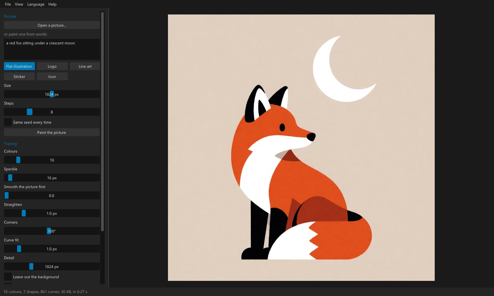

The command line
arachne-cli picture.png picture.svg traces it. Add --colours 12, --speckle 16, --corner 100, --drop-background, --outlines or --render check.png (the SVG drawn back, and how close it is).
Minimum requirements
| System | Windows 10 or 11, 64-bit (the tracer, arachne-cli, also builds on Linux) |
|---|---|
| Processor | any 64-bit processor (tracing runs on the CPU: a fraction of a second a picture) |
| Memory | 4 GB RAM to trace; 16 GB to paint from words (the models sit in memory) |
| Graphics | any graphics card with OpenGL 3.0 to trace; painting from words needs an NVIDIA card with 6 GB or more (CUDA) |
| Disk | 600 MB for the app; painting also needs Krea 2 Turbo, about 13 GB (Firmament's models: one download for both) |